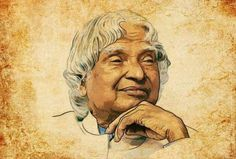

About Dr.APJ
Dr APJ Abdul Kalam, better known as the "Missile Man of India," was a source of inspiration for millions around the globe. His life, work, and words continue to motivate and guide individuals, especially the youth, towards a path of success and fulfilment. This post aims to share some of his most powerful and inspirational quotes that can serve as guiding lights in our lives.
Born in a humble family, Kalam's journey from Rameswaram to the Rashtrapati Bhavan is a testament to his indomitable spirit, unwavering determination, and immense dedication. His life story is a beacon of hope for many, proving that with hard work and perseverance, one can achieve their dreams, no matter how lofty they seem.
Working towards success can be a painstakingly long process, often leading us to give up out of despair before reaching our goal. Dr APJ Abdul Kalam was a man who taught us to dream, but what did he have to say about the path to success? That is where we start our series of quotes from the legend.
|

|